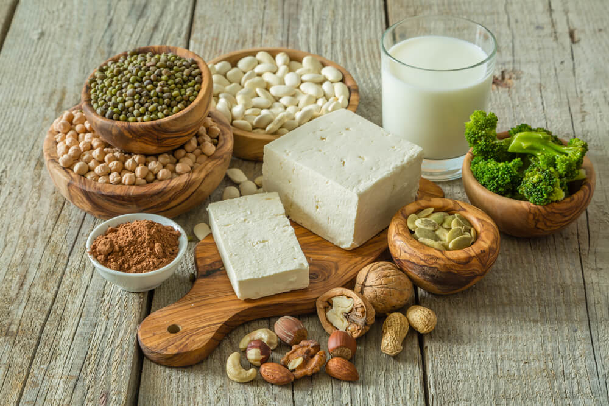

Alimentos que no pueden faltar en una dieta vegetariana

- Frutos secos: fuente de grasas saludables, antioxidantes, vitaminas y minerales.
- Semillas: ofrecen calcio, principalmente las de amapola, sésamo y lino. También aportan zinc.
- Combinar legumbres con cereales en el mismo plato para obtener una proteína completa.
- Incluir algas para obtener vitamina B12.
- Tomar sol: diariamente, de modo de obtener vitamina D, que beneficia la absorción del calcio vegetal.
- Combinar vegetales o legumbres ricas en hierro con alimentos ricos en vitamina C para favorecer la absorción del mineral.
- Consumir productos fortificados con hierro y vitaminas.
- Incluir aceite de oliva y de lino para obtener más grasas saludables y antioxidantes.